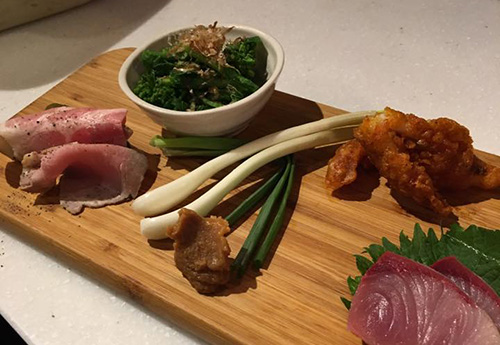

ライフスタイルクラブ
Terras 武蔵新城
中原区新城1-4-17 グランシャトー2F
044-777-6766
9時～21時半
中原区新城1-4-17 グランシャトー2F
044-777-6766
9時～21時半
新城2-2-10 (事務所)
新城中町18(作業所)
ライフスタイルクラブTerras 武蔵新城にて畳コースター販売します。
中原区上新城1-2-3
090-1812-7824
15時～19時（最終受付）
中原区新城 3-15-8
044-766-9223
9:00～売り切れまで
中原区新城2-4-11
044-766-4911
10:00～20:30
中原区新城1丁目12-14
044-777-4451
定休日：火曜（※ただし祭日や特別な場合をのぞく）
9時半～売り切れまで
中原区上新城 1-4-50-5
044-863-8682
営業日：木・金・土曜日
10時～15時半
（限定数売り切れまで）
中原区上新城 1-4-50-5
044-863-8682
営業日：木・金・土曜日
10時～15時半
（限定数売り切れまで）
中原区上新城2-10-15 新城ロイヤルプラザ 102
044-982-1600
11時半～22時
中原区新城1-11-11
サンマートビル1F
044-863-8857
11時～21時
中原区上新城2丁目7-1 セシーズ・イシイ7
10時～17時
上小田中中原区上小田中3－23−22
044-797-6139
ランチ11時〜13時
ビア17時〜22時
中原区上新城2-7-19 ダイアパレスステーションプラザ武蔵新城
044-740-9595
15時～21時
中原区新城5-10-6新堀ギタービル102
044-577-4301
16時～18時
新城 1-2-27 新城京浜ビル 1F
044-799-7633
定休日：月曜日
17時～24時半
17時～21時半
新城 1-15-4 第 5 三信ビル 1 F
044-863-9125
定休日：火曜日
17時〜23時
新城3-7-4 山田ビル 1F
044-750-9363
17時～23時
中原区上新城2-7-1
044-766-8720
17時～23時
17時～21時半

中原区新城1-15-5大光トラストビル1F
044-820-6669
17時～24時
中原区新城1-11-14
044-789-8242
17時～23時
.中原区新城1-15-5大光トラストビル1F
044-982-5554
17時～23時
新城 1-10-14
044-798-0206
定休日：月曜日
17時半～26時
高津区新作6-5-27
044-888-5631
17時半～21時半
中原区新城2-3-11
044-948-6490
定休日：月曜日（月曜日が祝日の場合は翌火曜日）
17時半～21時半
中原区新城2-3-9
044-751-4144
17時半～21時
上小田中2-34-24
17時半～22時
中原区新城1-16-12-2F
044-788-0116
18時～22時
新城2-2-10 (事務所)
新城中町18(作業所)
ライフスタイルクラブTerras 武蔵新城にて畳コースター販売します。
中原区新城5-3-11 東海林ビル1F
044-872-7207
18時～23時
中原区新城2-4-2
044-788-9984
18時～23時
中原区上小田中2-34-24
090-3339-3420
18時～22時（ラストオーダー）
新城2-2-10 (事務所)
新城中町18(作業所)
18時～24時（水曜日18時〜24時）
中原区新城3-4-6小竹ビル新城1F
044-799-3104
18時～24時
中原区新城4-3-2
044-789-8196
18時～22時
中原区上新城1-2-6 根津ビル1階
044-755-6622
定休日：第 1 ・第 3 月曜日
19時～5時
中原区新城1-11-20
044-948-5589
18時半～25時半
（1000BEROメニューは23時まで）